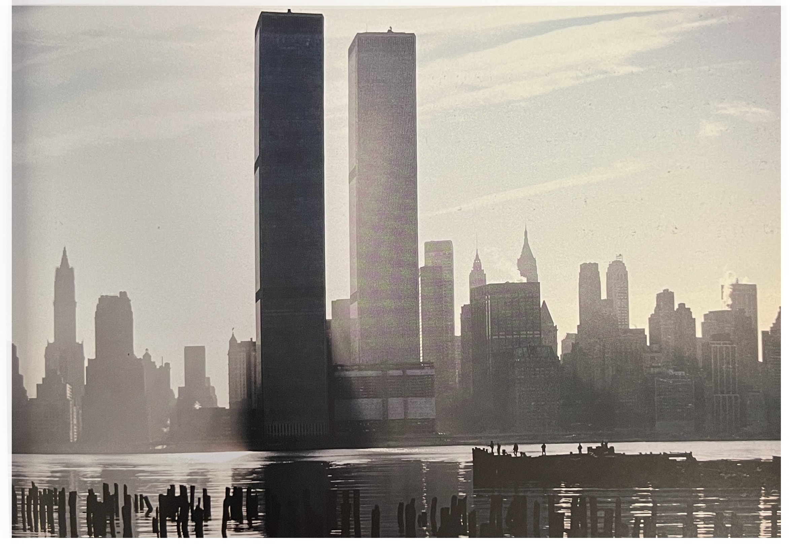
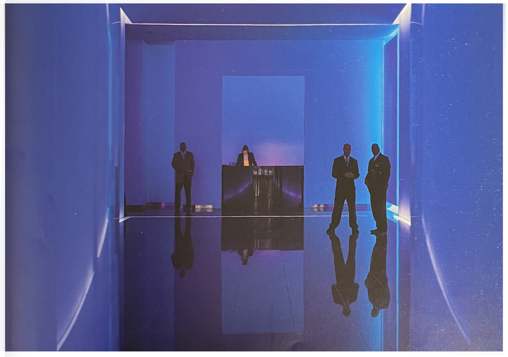

나는 저지 시의 뉴욕에의 뒤쪽을 찍기 위해 뉴저지에 가 있었다. 이 사진을 보고는 이것이 바로 평소 '무색의 색'이라고 부른는 것이라는걸 깨달았다. 이것은 색이 아주 미묘해서 거의 아무색이 없다고 해도 될 정도다. 마치 굶주린 사람이 빵부스러기에도 입맛을 다시는 것처럼 아주 약간의 색만 남겨져 있다. 늘 짙고 강렬한 빨간색, 노란색, 그리고 파란색이 아니라 조금 더 부드러웅 색의 팔레트도 괜찮다는 것을 깨닫는 일은, 어렵긴 하겠지만 그래서 더 큰 칭찬을 받을 만한 일이다.
세계무역센터
보이게 하라[1]흑백의 성조기 사진을 찍고 바로 뒤에 우연히 워싱턴에 가서 이걸 봤다. 나는 다른 사람의 예술작품울 사진에 담지 않으려고 하는 편이다.' 그러나 이 규칙에는 한 가지 예외 조항이 있고, 또한 이를 정당하게 대변하는 하나의 명언이 있다. 앞으로 곧 사라져 다시 볼 수 없게 될 것은 찍을 수 있다는 것이, 그 단하나의 예외 조항이고, 이를 완성하는 것은 로베르 브레송Robert Bresson의 말이다. "당신이 아니었다면 보이지 않았을 것을 보이게 하라."
궤맨 성조기
마침내...[1]이 사진을 찍기 위해 몇 년을 고생했지만 계속 실패했다. 줄 세우고, 구도를 짜고, 사진을 찍을 때 마다 경호원들이 내게 소리를 질렀고 노출이 부족하거나 초점이 맞지 않기 일쑤였다.
그러나 내게 니콘 D3가 생기고 나서는 경기의 판세가 다라졌다. 언제든 ISO1600으로 촬영이 가능했기 때문이다. 나느 사진을 찍고 유유히 사라졌다.
이것은 기술의 발전이 이전에는 잘 찍을 수 없던 것을 손쉽게 찍을 수 있게 해준 예다. 그렇지만 이건 단지 이전에 열려 있지 않았던 공간에서 사진을 찍을 수 있게 되었다는 말이지, 당신의 사진이 대단해졌다는 걸 뜻하는 것은 아니다. 이 사진이 주는 감동정의 동요는 '색'에서 오는 것이지 '색들'에서 오는게 아니다. 단채색을 쓰면 당신이 사용하는 몇 가지 색에 집중할 수 있게 해줌으로써 그 효과를 낼 수 있다.
최대의 효과를 위해서 최소한의 색을 사용하는 것이 필요하다.
푸른 로비
[참고문헌]
[1]빛, 제스처, 그리고 색light, gesture & color, 제이 마이젤 지음, 박윤혜 옮김, 시그마북스, 2015.3.2
....
....
....
....
....